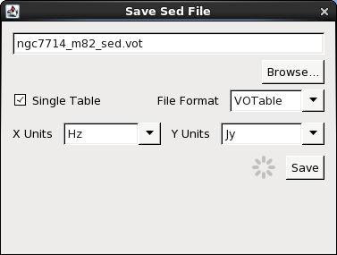
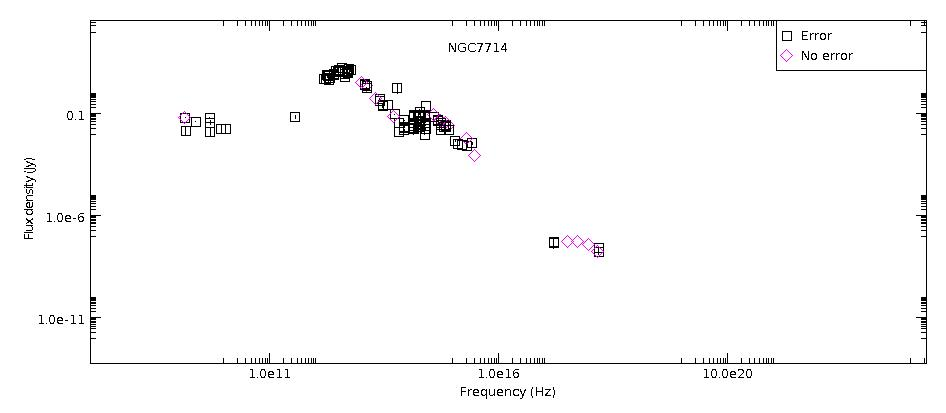

This thread describes how to save the SED data currently displayed in the Iris Visualizer to file, as well as record fitting sessions and fitted model parameters, images, and integrated flux calculations to file. This also explains how data can be exported to other programs. Saved SED data and fitting session files may be read back into the application at a later time to restore the analysis session.
Last Update: 07 May 2015 - updated for Iris 2.1 beta. SEDs can now be saved in ASCII format.
The SED Builder has the capability to save separate SED segments from various locations as one aggregate SED. The X and Y (spectral coordinate and flux) data values comprising the currently displayed SED data segment(s) in the Iris Visualizer may be saved to a file in one of the following formats:
In order to write your SED data to file, simply select one of the two “Save” menu options in the SED Builder window: use the one at the top to save all open SED segments together, or the “Save” option in the “Segments” section to save a single segment to file. Doing so will open a small window where you can enter a filename and file format, VOT, FITS, or ASCII.
By default, saving SEDs in VOT or FITS format will store all associated metadata along with the data values of the selected SED or segments. This means that SED segments will remain as individual spectro-photometric segments with their original units and metadata.
You have the option to save the data as a “Single Table.” Checking this box will save all the SED segments in that aggregate SED as one, full SED, without any distinction between segments. Tables are saved with the spectral, flux, error; the metadata is not saved. This makes the data more compliable for use in external applications. The user supplies the desired X and Y units for the new SED from the drop-down menus; this converts all SED segments to the same units.

SEDs saved in ASCII format can only be saved as a Single Table. Below is an example of a NED SED of NGC 7714 saved in ASCII format (in mJy vs microns):
# This file was generated by Iris, the VAO SED building and analysis tool
#
# File created on Mon Mar 02 11:23:07 EST 2015
#
#
# TARGET = NGC 7714
# RA = 354.058744
# DEC = 2.155161
# XUNIT = um
# YUNIT = Jy
#
# x y y_err
2.0120302013422817E-4 1.8799999999999996E-8 5.37E-9
2.0120302013422817E-4 2.6800000000000002E-8 5.37E-9
2.0675344827586207E-4 1.79E-8 NaN
2.0675344827586207E-4 1.17E-8 NaN
2.997925E-4 5.77E-8 NaN
3.2201127819548876E-4 4.0799999999999995E-8 NaN
...
125963.23529411764 0.043000000000000003 0.003
209645.1048951049 0.0153 0.006000000000000001
214137.5 0.0658 NaN
214137.5 0.0669 0.0028000000000000004
Please note that the saving a SED as a Single Table (ASCII format included) does not sort the rows by spectral values. If you load the file to an external application, you may need to sort the data yourself. This shouldn’t be a problem for single-segment SEDs, but care must be taken for multi-segment SEDs.
Saved SED data may be opened in a future session of Iris simply by selecting the Load File icon on the Iris desktop, and then using the Location on Disk option in the data-loading window which opens.
Note: You do not need to write the extension (.vot, .fits, .dat) to load the file back into Iris, but Iris will not add the extension after the filename for you.
Note: If you accidentally exit the SED Builder window or Iris Visualizer, your data will still be there; just click on the SED Builder/SED Viewer icon to restore the SEDs. However, if you wish to revisit the SED data in a later Iris session, you must save the data before exiting Iris.
| [Back to top] |
After fitting a model to SED data in Iris, the model X and Y data arrays may be saved separately from the source data by selecting the “Save” option in the Iris Fit window after finalizing a fit, and prior to exiting the fitting session with the “Dismiss” button (see the “Modeling and Fitting SED Data” section of the Iris How-to Guide for details). Saved custom fit parameters may be restored in a future Iris session by opening the saved CDB-format file from within the Iris Fit window, using the File->Read from File menu option.
Selecting File -> Write to text file, instead, saves the model data to a human-readable text file. The saved model values contained in such a text file would appear in the format shown below.
% more bpl_active_comps.txt
File: Sed0
Fri Feb 15 16:35:05 EDT 2015 Iris 2.1
TARGNAME: 3C 273
Model Expression:
c1
Fit parameters:
Final fit statistic: 0.01153118077229248
Reduced statistic: nan
Probability [Q-value]: nan
Degrees of freedom: 447.0
Data points: 450
Last function evaluation: 342
Component 1: brokenpowerlaw
F refer = 5000.0 angstroms
ampl = 0.008196716
index1 = 0.040695254
index2 = -0.18412833
| [Back to top] |
The SED data currently displayed in Iris may be printed to a hardcopy image in either JPG (.jpg), PNG (.png), GIF (.gif) or BITMAP (.bmp) format, by selecting File->Save plot to image file, and making the desired image format selection. The image will scale to the size and shape of the plot in the Iris Visualizer. Below is an example image saved in JPG format.

| [Back to top] |
Under the “Shift, Interpolate, Integrate” icon, you can calculate the flux through a user-inputted passband or through one of the pre-loaded photometry filters (see Integration of SEDs in Iris in the “Shifting, Interpolating and Integrating SED Data in Iris” thread for more information). You have the option to save any or all of the calculated fluxes in ASCII format by highlighting the ones you wish to save; clicking “Save” without highlighting any of the Results will save all fluxes. You can convert the calculated fluxes and effective wavelengths/passbands into whichever units you want by using the X and Y drop-menus. Below is an example of the ASCII file displaying the output file:
% more arp220_fluxes.txt # This file was generated by Iris, the VAO SED building and analysis tool # # Iris Flux Integration output # Spectral values are the effective wavelengths of the passbands # # File created on Wed Feb 25 16:05:58 EST 2015 # # # TARGET = ARP 220 # RA = 233.737985 # DEC = 23.503187 # XUNIT = um # YUNIT = erg/s/cm2 # # x y 3.315655859375 1.15034615781E-15 4.56449921875 6.69067475881E-16 10.78684453125 1.22262438471E-15 21.9149640625 2.88628452028E-15 4000.5 8.44103142055E-9 164885.875 2.02285348225E-14
These files can be reloaded into Iris as an ASCII Table.
| [Back to top] |
Simple Application Messaging Protocol (SAMP) allows separate programs to communicate with each other. Iris uses SAMP to communicate with other SAMP-enabled applications, such as TOPCAT and Aladin. So long as the SAMP status in the lower left-hand corner of the Iris desktop says “connected”, we can transmit tabular data back-and-forth between Iris and other SAMP-enabled Virtual Observatory programs.

Iris exports data to outside applications via the “Broadcast” button. Iris can broadcast data from the SED Builder, which allows us to send the metadata for SED segments and aggregate SEDs, and from the Metadata Browser, from which we can select specific data points to send. The SED Builder window has two “Broadcast” buttons: one at the very top of the window, which allows for the highlighted SED in the Open SEDs box to be exported, and one in the Segments section, which allows one or multiple SED segments to be broadcasted; its icon is a radio tower. The Metadata Browser “Broadcast” button is in the bottom right-hand corner of the window.
With the external application open and connected to the SAMP network, highlighted SED segments or data points may be broadcasted from Iris to the external application. In the example below, we have loaded an SED of M82 from NED in Iris, highlighted the SED segment in the Segments section, and exported the data to TOPCAT by clicking on the highlighted “Broadcast” button in the SED Builder window. We view the table in TOPCAT by clicking Views -> Table Data.
See “Transmitting Data from a SAMP-enabled Application” for an example of exporting SED data from the Metadata Browser in Iris to TOPCAT.
| [Back to top] |
| Date | Change |
|---|---|
| 08 Aug 2011 | updated for Iris Beta 2.5 |
| 25 Sep 2011 | updated for Iris 1.0 |
| 15 Jun 2012 | updated for Iris 1.1 |
| 02 Jan 2013 | updated for Iris 1.2 |
| 02 Jul 2013 | updated for Iris 2.0 |
| 05 Aug 2013 | added “Save Plot Image to File”, “Save Integrated Flux” and “Export SED Data to External Applications” discussions |
| 02 Dec 2013 | updated for Iris 2.0.1 |
| 21 Apr 2014 | fixed typo. Single Tables store only 3 columns: the spectral, flux and flux error data. |
| 07 May 2015 | updated for Iris 2.1 beta. SEDs can now be saved in ASCII format. |
| [Back to top] |
{kind=link}
{kind=link}